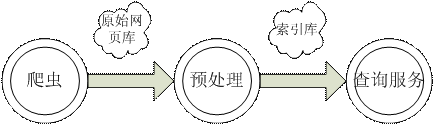
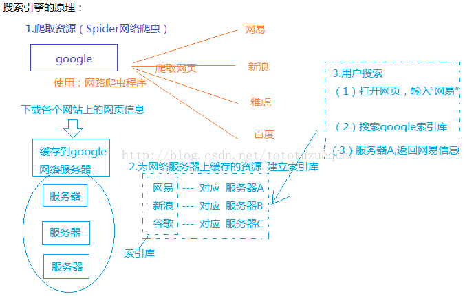

搜索引擎简介
1原理
https://www.ibm.com/developerworks/cn/java/j-lo-dyse1/index.html
https://yq.aliyun.com/articles/101334
搜索引擎三段式工作流程 
搜索引擎整体结构


2 技术方案预研
2.1 商用-阿里云open search
https://www.aliyun.com/product/opensearch?spm=5176.doc29193.765261.295.rGvxlR
2.2 商用-达观
2.2.1 文本语义理解
http://www.datagrand.com/textmining.html
2.2.2 垂直搜索引擎
http://www.datagrand.com/searchengines.html
http://doc.datagrand.com/developer/search-engine
2.2.3 数据上报
tablename
含义
item
物品信息表
useraction
用户行为信息表
2.2.4 服务接口
关键词搜索服务
自动补全服务
相关搜索服务请求
热门搜索词接口
各搜索引擎比较
https://yq.aliyun.com/articles/52746
http://blog.csdn.net/jameshadoop/article/details/44905643
3 开源-Elastic Search
Elascic Search 是一个基于Lucene构建的开源，分布式，RESTful搜索引擎。设计用于云计算中，能够达到实时搜索，稳定，可靠，快速，安装使用方便。支持通过HTTP使用JSON进行数据索引，官网https://www.elastic.co/cn/
4 开源-Apache Solr
Apache Solr (读音: SOLer) 是一个开源的搜索服务器。Solr 使用 Java 语言开发，主要基于 HTTP 和 Apache Lucene 实现。Apache Solr 中存储的资源是以 Document 为对象进行存储的。每个文档由一系列的 Field 构成，每个 Field 表示资源的一个属性。Solr 中的每个 Document 需要有能唯一标识其自身的属性，默认情况下这个属性的名字是 id，在 Schema 配置文件中使用：id进行描述。
5 开源-Lucene
Lucene 是apache软件基金会一个开放源代码的全文检索引擎工具包，是一个全文检索引擎的架构，提供了完整的查询引擎和索引引擎，部分文本分析引擎。Lucene的目的是为软件开发人员提供一个简单易用的工具包，以方便的在目标系统中实现全文检索的功能，或者是以此为基础建立起完整的全文检索引擎。
6 开源-Nutch
Nutch 是一个开源Java 实现的搜索引擎。它提供了我们运行自己的搜索引擎所需的全部工具。包括全文搜索和Web爬虫。在Nutch的进化过程中，产生了Hadoop、Tika、Gora和Crawler Commons四个Java开源项目。如今这四个项目都发展迅速，极其火爆，尤其是Hadoop，其已成为大规模数据处理的事实上的标准。Tika使用多种现有的开源内容解析项目来实现从多种格式的文件中提取元数据和结构化文本，Gora支持把大数据持久化到多种存储实现，Crawler Commons是一个通用的网络爬虫组件。
https://www.oschina.net/p/nutch
https://www.ibm.com/developerworks/cn/opensource/os-cn-nutchwang/